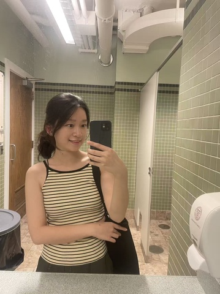

基本信息
备注
之前告诉小助手togo在盗用我们新生手册的那位同学——Haohuan
1-page Resume (Encouraged，PDF格式，中英文均可)
Portfolio or Additional Files (Optional，PDF或视频)
请把文件名命为：first name_Last name_netid
请上传一张自己的照片，普通的生活照就可以！（只是为了面试的时候我们可以把你认出来）

查看原图
查看原图
通用问题部分
为什么想要加入CSSA？
作为junior，我在过去两年中享受到了很多CSSA的活动和福利，比如接机、春晚、桌游夜等等。进入本科高年级，我希望自己能从活动的参与者变成服务者，让更多同学在异国他乡找到归属感；basically giving back to the community，为自己身处的华人留学生群体贡献一点力量。
你心目中CSSA是个什么样的组织？
我觉得CSSA是一个“桥梁”。它既是对外的桥梁，连接了华人留学生和学校各类资源，上到学术/求职平台的支持、下到周边餐饮的福利；也是对内的桥梁，给华人留学生提供互相bonding的机会，让我们在CSSA举办的活动中找到快乐和归属感。CSSA也是激发灵感、促进成长的桥梁，让我们获得更丰富的留学生活体验。
加入CSSA之后，你最想在康奈尔校园内实现的事情是什么？
1. 希望能把UCLA CSSA的活动灵感带来Cornell，比如非诚勿扰CP配对、情人节饼干DIY、万圣节桌游夜等等。2. 作为民乐人和生物人，希望促进更多CSSA和CEME的联系，比如邀请CEME参与中秋游园会活动；另外联动CSSA和InT，举办biohackathon。3. 参与秘书处的工作！
秘书处
如果让你选择未来一周的工作，你想做什么？
为CSSA官网开发一个新功能
当别人第一次见到你时，他们会说“哇，你居然___！”（请填空）
是走路过来的！（非常喜欢两条腿的出行方式！一般各种场合能走路就会走路过去，当然其实是在为自己还没考驾照开脱（目移。
某天深夜，一位新生在微信上非常焦急地询问：‘我的航班延误了了，接机联系不上怎么办？现在半夜一个人在机场好害怕...’
作为小助手值班的你，会如何回复？请写出具体回应（注意：你无法直接解决问题，但需要让TA感到安心）。
【1】同学你好！你的情况我们已经了解了，请放心，我们正在联系机场附近有车的学长学姐以及包车公司，也在联络其他滞留机场的同学，会尽快给你们安排接机【2】之前也有过同学在机场过夜的情况，这是几篇我们觉得有用的JFK机场过夜攻略，可以参考看看！【3】如果遇到紧急情况，可以拨打外交部应急中心电话：+86-10-12308。【4】注意安全，随时保持联络:) 不用担心，会有CSSA的同学帮助你顺利到达伊萨卡~
你希望从秘书处的伙伴们和这份工作中获得什么？（比如：深厚的友谊？一份完美的简历？超硬核的技能？还是单纯的快乐？）
技能和快乐是我最想从这份工作中获得的，也是我最想加入秘书处的原因。我希望能从各种细小的任务中锻炼逻辑、分析、设计、社交等各种能力，也希望自己享受成长的过程。至于友谊，我觉得君子之交淡如水，能一起愉快地共事我就非常非常知足啦。
（可选）有人说“我们属于我们投入过心力的地方”。你希望自己在秘书处留下怎样的痕迹？
从物理层面来说，我希望协助2026新生手册的版本更新、以及CSSA官网和小程序的实际设计和落地。当然，我也想在精神层面上留下一点点痕迹，比如让观众们觉得CSSA春晚的购票、活动提醒、检票、落座都很顺利丝滑，又或者让那位半夜滞留机场的朋友觉得安心，最终在小助手的协调之下顺利到达伊萨卡。
（可选） 秘书处传统：每次团建都要尝试一个奇奇怪怪的新活动。你有什么离谱但有趣的idea吗？（多奇怪都行）
【1】想玩物品捉迷藏！版本一：规定一个地方，大家各自拿一个物品隐藏，目标是判断别人隐藏的物品是什么；版本二：大家隐藏同一种物品（比如每人都是一个矿泉水瓶），目标是破坏其他人的该物品😈【2】另外也可以试试“鸡尾酒接龙”~ 每个人带一些饮料/酒精，可以是难喝饮料/好喝果汁/烈酒，只要可饮用就行，全部倒进一个大桶。最后每个人都要喝完一杯这个桶里的饮料哈哈。
第一志愿为什么选择这个部门？
我一直对后勤类工作感兴趣，高中负责过校友会管理、戏剧节运营，前两年也在社团参与秘书类工作。正如学长们所说，秘书处是连接CSSA其他部门的地方，也是新生了解康村的第一站。我很享受做这些琐碎繁杂的工作，不仅因为我个人喜欢温暖舒服、有秩序/系统化的生活方式，也是因为做这些可以更好地帮助康村学子融入这里:)
内联部
第二志愿为什么选择这个部门？
我对朋友的生日爱好一直属于记得比较清楚的，也很爱策划惊喜活动。我还喜欢看各种综艺，因此会有些新奇的团建活动想法~ 内联部作为促进CSSA内部联系一个部门，我觉得可以极好地帮助成员之间bonding，让大家在这个小社群里建立深刻的联系。我欣赏认同内联部的初衷，也觉得自己的能力和性格会很适合这个部门。
是否接受部门调剂？
是
Any other questions or comments?
CSSA是我最想加入的社团，所以非常愿意投入时间在CSSA当中。希望能考虑我的加入，谢谢！😊